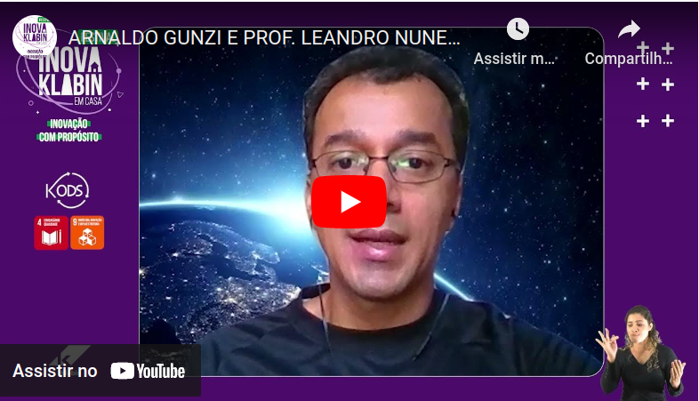

No festival #InovaKlabin, bati um papo sobre IA e computação baseada na natureza, com um dos maiores cientistas do Brasil, o prof. Leandro de Castro.
São só 15 min, e está disponível no YouTube (por enquanto, não sei se vão tirar).
Veja também:
Forgotten Lore - Ideias Técnicas com uma pitada de filosofia.